Step 1:
Refer to Figure 13.24 in the text book.
Write the expression for equivalent capacitance,  .
.

The gate drain overlap capacitance per micrometer of gate width is 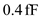.
Determine the value of gate-drain overlap capacitance of transistor .
.
Substitute 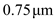 for in the equation.
Determine the value of gate-drain overlap capacitance of transistor .
.
Substitute  for in the equation.
for in the equation.
Step 2:
The effective drain body capacitance per micrometer of gate width is .
Determine the value of drain-body capacitance, .
Substitute  for in the equation.
for in the equation.
Determine the value of drain-body capacitance, .
Substitute for in the equation.
Step 3:
Determine the value of input capacitance of the load inverter.
Substitute  for
for  , 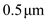 for
, 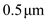 for  and for
and for  in the equation.
in the equation.
Step 4:
Determine the value of equivalent capacitance.
Substitute for , for , 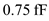 for , for , 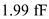 for , for and 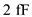for in the equation.

Step 5:
Determine the factor .
Substitute 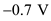 for  and
and  for
for  in the equation.
in the equation.
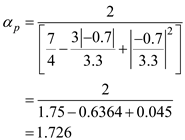
Step 6:
Determine the factor .
Substitute 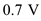 for  and 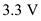 for
and 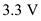 for  in the equation.
in the equation.
Step 7:
Determine the value of low to high propagation delay.
Substitute 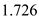 for ,  for
for  , 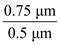 for ,
, 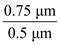 for ,  for
for  and
and  for
for  in the equation.
in the equation.
Thus, the value of low to high propagation delay, is 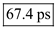.
Step 8:
Determine the value of high to low propagation delay.

Substitute for , 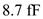 for  , for
, for  , for
, for  and for
and for  in the equation.
in the equation.
Thus, the value of high to low propagation delay, is 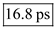.
Step 9:
Determine the value of propagation delay, .
Substitute for  and 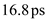 for
and 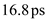 for  in the equation.
in the equation.
Thus, the value of propagation delay, is 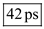.
Step 10:
Determine the value of dynamic power dissipation when the circuit is operated at a 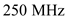.
Substitute for  ,
,  for
for  and
and  for
for  in the equation.
in the equation.
Thus, the value of dynamic power dissipation when the circuit is operated at a, is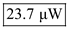.